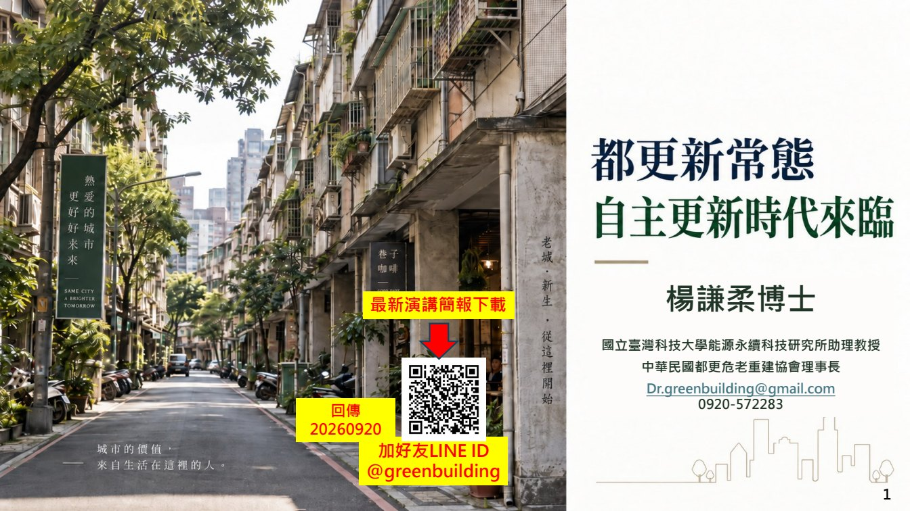
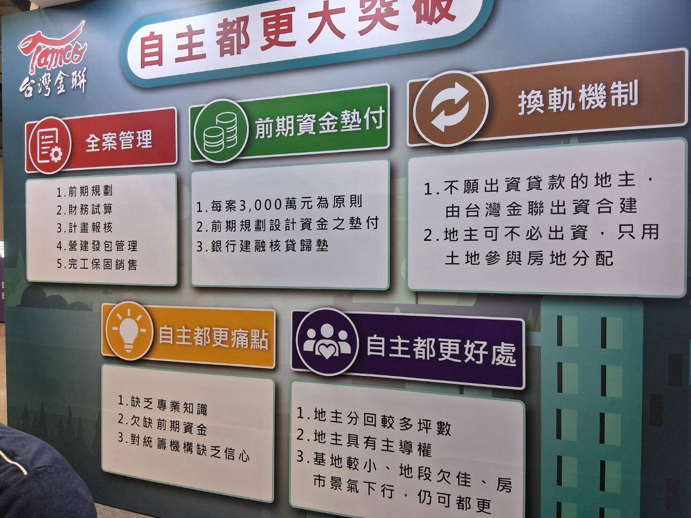
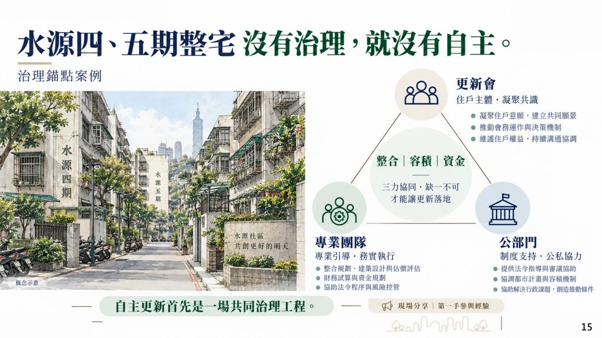
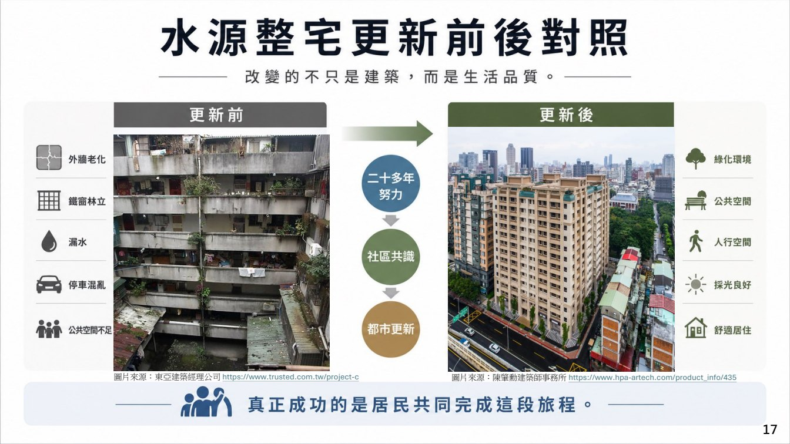
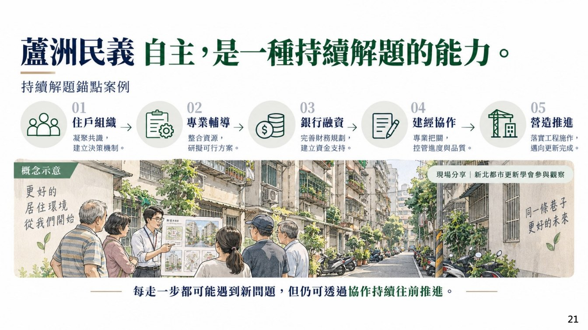
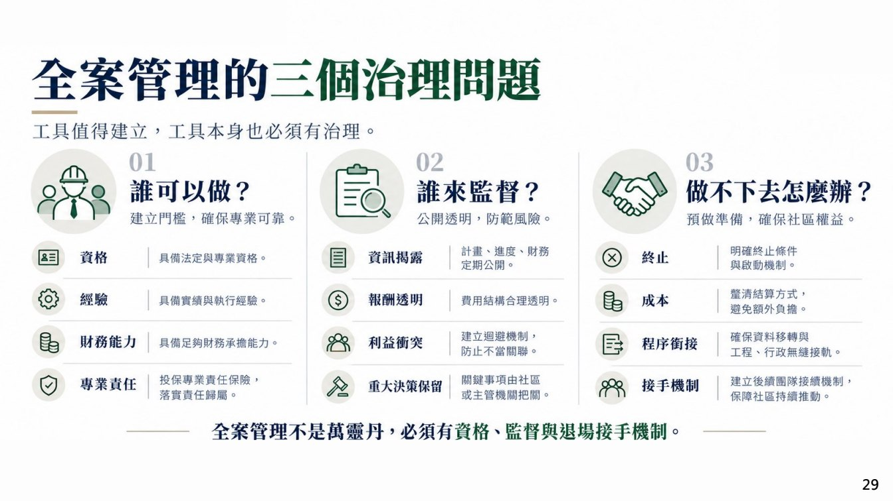

基地與權屬
土地、建物、所有權人名冊、持分、現況使用與限制條件是否已盤點。
Topic 01｜主要議題
自主都更的重點不是直接告訴社區該怎麼做，而是把簡報與演講整理成資料、共識、專業委任與風險控管的討論骨架，讓自辦、合建、公辦、危老或整建維護能放在同一張圖上比較。

Core Frame
這一頁不是對外宣告答案，而是把容易被混在一起的問題拆開：基地資料、授權共識、路徑選擇、專業分工、財務分配與契約風險。
土地、建物、所有權人名冊、持分、現況使用與限制條件是否已盤點。
誰能代表社區談？授權範圍、會議紀錄、反對意見與撤回機制是否清楚。
危老、都更、自辦、合建、公辦或整建維護的門檻、時程與風險是否比較過。
建築、估價、法律、財務、信託與第三方監督要何時介入，費用如何分攤。
土地價值、建築成本、車位、租金補助、找補、公設與市場價格基準要拆開看。
履約保證、資金信託、續建安排、資訊揭露、違約責任與個資使用，都是需要拆開閱讀的項目。
2026 Latest Policy
自主都更之所以是本網站重點，是因為 2026 年政策討論已經從觀念宣導，進到信用保證、全案管理、前期資金與制度監理。這些資訊應直接整理在頁面上，而不是只放外部連結。
聚焦專業整合、財務規劃、管理權責分工，並邀金融主管機關、公股銀行、地方政府與公協會參與。
官方將三大挑戰整理為資金取得困難、專業整合能力不足、住戶共識形成不易。
中央都市更新基金規劃提撥 10 億元信用保證專款，預估可提供 100 億元信用擔保總額度。
新增全案管理機制，讓所有權人可委託具專業能力的機構統籌自主更新，並以服務費模式避免參與房地分配。
泛公股機構開辦自主都更全案管理，並提供前期資金墊付，回應缺資金、缺統籌機構信任的痛點。
自主都更不是「自己扛全部風險」，而是把決策權留在所有權人端，同時補上專業統籌與資金工具。
Audio Notes
錄音不是只說「要自主都更」，而是在拆解自主更新到底自主在哪裡：選擇權、資訊權、決策權、合作夥伴選擇、風險承擔，以及遇到問題時持續解題的能力。
演講明確提到自主不是 DIY。它更接近「社區先有共同選擇，再選合作夥伴」，專業者、專案管理、估價、法務、融資仍然是重要角色。
錄音裡說自主更新不是標準答案，也不是叫每個社區都走自主；有些社區可能只需要維護修繕，有些需要性能提升，有些才需要危老或完整重建。
演講把自主更新形容成一種持續面對問題、找到解法的能力。它不是一次會議或一次簽約，而是從資料、共識、專業、資金到契約的連續整理。
Transcript Notes
以下以兩份錄音逐字稿為主，整理成住戶在開會、看提案、簽文件前可以逐項核對的知識點。因逐字稿有自動辨識誤差，頁面採「時間碼脈絡＋知識整理」呈現，不逐字硬引。
錄音提到自主不是住戶自己施工，而是決策權回到所有權人；社區仍要建立能代表業主的治理能力，包含重大方向、契約研究、財務與分配判斷。
錄音將自主更新成熟度拆成認知、溝通、資訊平台、共同方向、組織制度。尤其提醒社區要有透明公開的資訊平台，不能讓零散小群組取代正式資訊。
逐字稿脈絡很清楚：社區不用成立建設公司，也不必自己變營造廠；但必須有能力替自己做決定，其他專業管理與執行再交由專業者處理。
錄音把自主更新說成「持續面對問題並找到解方的能力」，並要求社區先看成熟度。不同路徑的同意門檻、獎勵、時程、風險與費用結構不同，不能把重建當唯一答案。
錄音中直接列出住戶應理解的問題：營造找誰、發包多少、銀行找誰、建商倒了怎麼辦。這些都不能停留在口頭承諾，應轉成信託、履保、續建、違約與資訊揭露機制。
逐字稿列出建築、估價、法律、金融、信託、營造等工作；專業要由專業者執行，但住戶要能決定方向。因此委任範圍、費用來源、報告歸屬與獨立性必須先談清楚。
錄音提到要把整合人、管理、建經公司、銀行等拉進來，形成都更業務與正規部隊。整理成網站語言，就是都更聯盟要能把跨專業協作變成一套可交付、可追蹤的工作系統。
若需提供證件、印鑑、權狀或謄本資料，應確認申請目的、收件者、保存方式、使用期限與不得另作他用的文字註記。
比較方案時應分列土地價值、建築成本、車位、租金補助、找補、公設與市場價格基準，避免只看單一坪數或總價。
車位是否可規劃、屬坡道平面或機械車位、能否完整持有與市場行情，都會影響估值，不能直接套用單一價格。
錄音指出自主都更可能讓地主分得較多，但風險也要自己看；合建則由建商帶入資金與實施能力。比較時要同時看資金、技術、風險承擔與利潤分配。
錄音提到自主都更成功比例不高，常卡在前期資金與多專業整合；全案管理的作用，是協助地主取得專業、前期資金、財務規劃、信託與後續執行介面。
智慧綠建築的重點在於居住性能，包含通風、隔熱、採光、節能、設備管理、安全與長期維護成本，應回到規格與驗收來檢查。
| 逐字稿提醒 | 住戶容易誤解的地方 | 建議整理成的文件 | 會議上要留下的紀錄 |
|---|---|---|---|
| 代表機制 | 以為找幾位熱心住戶就可以代表全部人，忽略所有權人決策權、授權範圍與業主治理能力。 | 代表名單、授權清單、會議規則、資訊公告方式、重大方向與契約/財務/分配議題清單。 | 哪些事項可由代表談？哪些事項需住戶會議決議？契約、財務、分配誰負責判讀？ |
| 資訊平台 | 以為 LINE 群組很多就是溝通充分，但不同小群組反而可能讓訊息破碎。 | 正式公告平台、會議紀錄、問答追蹤表、文件版本紀錄、反對意見回覆表。 | 哪一個平台才是正式資訊？小群組訊息是否不作為決策依據？版本如何標示？ |
| 路徑選擇 | 把危老、都更、整建維護、自建、合建混成同一件事。 | 路徑比較表：同意門檻、獎勵、時程、費用、風險、是否需審議。 | 本社區目前符合哪些條件？不符合哪些條件？需要補哪些資料？ |
| 契約風險 | 只看分回與補貼，沒有檢查資金、履約、續建、違約與資訊揭露。 | 契約條款檢核表、信託架構圖、履約保證、續建安排、版本紀錄。 | 若建商、營造或資金出問題，誰負責、錢在哪裡、工程如何接續？ |
| 專業審查 | 以為有專業人士參與就等於安全，沒有確認他代表誰、審什麼。 | 委任契約、服務範圍、交付報告、費用來源、利益衝突揭露。 | 顧問是否由社區共同委任？報告是否全體可讀？可否二次審查？ |
| 都更聯盟 | 以為找齊很多專業就會自動整合，實際上仍可能出現整合人不明、責任斷點與意見衝突。 | 聯盟成員名單、整合人資格、分工表、總窗口、交付成果、會議節點、責任邊界與爭議處理流程。 | 誰是整合人？誰負責把建築、估價、金融、信託、工程意見整合給住戶判斷？ |
| 全案管理 | 以為全案管理只是多一個顧問，沒有看它是否補上前期資金、財務規劃與信託介面。 | 全案管理服務範圍、前期資金安排、財務規劃、信託架構、實施者或合建媒合備案。 | 全案管理收費模式是什麼？是否代墊前期資金？是否協助銀行、信託與實施者媒合？ |
| 個資文件 | 為了推進進度先交資料，事後才發現用途、保存與轉交對象不清楚。 | 文件收取清單、用途限制、保存期限、不得另作他用文字、退還或銷毀規則。 | 誰收件？收哪些？用於哪個程序？是否可撤回或要求銷毀？ |
| 分回與估價 | 只比較一坪換幾坪，沒有拆土地價值、車位、公設、找補與市場基準。 | 分配試算表、估價報告摘要、車位條件表、租金補助與找補明細。 | 估價基準日期為何？車位如何估？公設比如何影響實際可用空間？ |
| 自建/合建比較 | 只看誰分回較多，沒有比較誰帶入資金、誰承擔風險、誰管理工程。 | 自建與合建比較表：資金、專業、利潤、風險、時程、履約保證。 | 自建省下的是利潤還是轉成社區責任？合建讓出的利益換到哪些保證？ |
| 智綠規格 | 以為「智慧」「綠建築」是加分形容詞，沒有要求可驗收的設備與性能。 | 設備清單、性能目標、保固年限、維護責任、管理費與汰換成本估算。 | 哪些規格入約？如何驗收？十年內誰維護、誰付費？ |
Field Photo Text
補充照片把台灣金聯的自主都更服務拆成「全案管理、前期資金墊付、換軌機制、痛點、好處」。這張圖很適合直接放進網站，作為住戶理解全案管理的入口。

現場圖卡以台灣金聯為例，說明自主都更不是只有觀念宣導，而是要補上專業管理、前期資金與不願出資地主的替代機制。
全案管理：前期規劃、財務試算、計畫報核、營建發包管理、完工保固銷售。
前期資金墊付：每案 3,000 萬元為原則；前期規劃設計資金之墊付；銀行建融核貸歸墊。
換軌機制：不願出資貸款的地主，由台灣金聯出資合建；地主可不必出資，只用土地參與房地分配。
| 圖卡項目 | 現場文字 | 放進住戶討論時的意思 |
|---|---|---|
| 自主都更痛點 | 缺乏專業知識、欠缺前期資金、對統籌機構缺乏信心。 | 這三點正好對應網站風險表：專業委任、資金路徑、資訊公開與代表機制。 |
| 自主都更好處 | 地主分回較多坪數、地主具有主導權；基地較小、地段欠佳、房市景氣下行，仍可都更。 | 「較有利」不是無風險，而是把建商利潤、全案管理費、資金成本與風險承擔重新配置。 |
| 全案管理 | 從前期規劃到完工保固銷售，涵蓋財務試算、報核與營建發包管理。 | 住戶選全案管理公司時，應看它是否能補上建設公司原本的開發、規劃、採發、營造、品管、售後等能力。 |
| 前期資金 | 每案 3,000 萬元為原則，先墊付規劃設計資金，再以銀行建融核貸歸墊。 | 社區應追問墊付條件、利息、保證、歸墊時間點、貸款失敗備案與信託安排。 |
| 換軌機制 | 不願出資貸款者可由台灣金聯出資合建，地主只用土地參與房地分配。 | 這是處理「有地主不願貸款或出資」的替代路徑，但仍需比較分配、權利、風險與契約責任。 |
Transcript Addendum
依照逐字稿可辨識內容，主持人多次請與談者把「自主都更如何選擇全案管理公司」「專業如何整合」「權利分配如何判讀」說清楚。以下整理成住戶可直接使用的判讀表。
逐字稿在案例說明中提到，長期推動的關鍵包括彼此信任、資訊公開透明、持續溝通與專業團隊配合。這代表資訊公開不是形式公告，而是社區治理的一部分。
戴雲發相關段落談到，建設公司有開發、規劃、採發、營造、品管、售後、業務等部門；自主都更若委任全案管理，就要找能補上這些功能的單位，而不是只找單一顧問。
逐字稿接著談到營造廠財務穩定、過往案例、施工細節、防水、管線接合、工人管理與發包後管理。這呼應將捷執行長林莉婷提到的「要找有規模、有口碑、能管理細節」的方向。
逐字稿提到一般建商利潤與全案管理服務費的差異，並推論地主可能分回更多；但這個有利條件成立的前提，是全案管理、資金、專業與施工風險都能被制度化管理。
地政士公會前任理事長段落強調，都更重大利益與利害在地籍、登記、測量、地權、權利變換、地價與稅務；權利價值要能分配公平，後續結合仲介、代銷、估價、建商與銀行才較順利。
逐字稿說明權利變換核定的是比例，不只是當下金額；若信任權利變換與估價、審議、陳情機制，社區可把力氣放在擴大基地、提升產品與選擇合適實施方式。
逐字稿列出常見爭議：頂樓、地下室、裝潢、樓層差異、產權瑕疵、登記面積與實際使用空間不一致。估價師與都更規劃團隊的功能，是把認知落差釐清並還原。
| 逐字稿議題 | 專家說法整理 | 住戶應要求的資料 | 會議追問 |
|---|---|---|---|
| 訊息公開方式 | 成功案例靠長期信任、資訊透明、持續溝通與專業配合，不是一次說明會就完成。 | 正式公告平台、會議紀錄、問答追蹤、文件版本、專業報告摘要。 | 哪裡才是正式資訊？誰負責更新？住戶疑問多久回覆？ |
| 全案管理公司選擇 | 要能補上建設公司原本具備的開發、規劃、採發、營造、品管、售後與管理功能。 | 公司規模、實績、服務範圍、團隊名單、發包管理、施工品質管理與售後機制。 | 它能做哪些建設公司原本做的事？哪些仍要外包？誰負責整合？ |
| 營造與發包後管理 | 不是只找營造商把房子蓋起來，還要看財務穩定、施工案例、防水、管線、工人管理與細部工法。 | 營造廠財報或信用資料、案例參訪、施工計畫、品質查核表、發包後管理流程。 | 誰驗收細部工法？發包後誰盯進度、品質、追加減帳與缺失改善？ |
| 對地主最有利的條件 | 自主都更可能讓地主分得更多，但差異來自省下建商利潤或改以全案管理服務費支出，風險也回到地主端。 | 建商利潤、全案管理費、共同負擔、利息、信託、前期資金與風險承擔比較表。 | 多分回的利益，有沒有被前期資金、利息、管理費與風險成本抵消？ |
| 地政士與權利分配 | 地籍、登記、測量、地權、權利變換、地價與稅務會直接影響分配公平。 | 地籍資料、登記面積、土地持分、稅務影響、權利變換試算與分配比例說明。 | 地政士何時介入？分配前是否已釐清產權瑕疵、繼承、抵押與持分差異？ |
| 估價師與樓層/持分差異 | 頂樓、地下室、樓層、裝潢、實際使用空間與登記面積不一致，都會造成分配認知落差。 | 估價報告摘要、樓層別價格因素、產權瑕疵說明、地下室/頂樓/增建判讀。 | 估價師如何處理樓層、持分、產權瑕疵與使用現況？住戶如何陳情或複核？ |
Illustrated Map
這個區塊把投影片、錄音與最新政策整理成可視化架構，讓讀者一眼看懂自主都更真正要補的能力。
核心不是施工，而是形成共識、授權代表、保留選擇權，並用資訊平台或會議紀錄讓討論可追蹤。
把個別意見轉成正式程序，處理同意、反對、撤回、授權、公告與會議紀錄。
2026 修法方向的新重點：協助統籌都更事業，不參與房地分配，以服務費模式支援自主更新。
建築、估價、法務、財務、工程、信託等專業拆解成本、分配、風險與履約條件。
將建築、估價、法律、財務、信託、營造與專案管理整合成共同工作架構，讓社區取得一致的專業判讀與對外談判支援。
信用保證、前期資金墊付、融資與信託讓工程款、撥款節點與續建風險有制度化管理。
都市更新仍要面對地方與中央審議，容積獎勵、公共回饋與社會住宅/婚育宅政策也會影響方案。
Slides × Transcript
自主都更這一頁需要最完整。以下把投影片當視覺索引，旁邊補上錄音中真正有價值的口語說明：自主不是 DIY、不是單一路線，而是形成選擇能力。
Key Visual Materials
這裡把自主都更最容易混淆的資訊做成圖文卡，讀者不用跳去外部網站才能理解。

錄音提到自主更新案常需要多年整合，問題會不斷出現。頁面應補上：代表機制、專業陪伴、資金安排、信託與資訊公開，才是成功條件。

投影片呈現案例時，網站應補：基地條件、所有權結構、原住戶共識、專業團隊、財務模型，哪些可以參考，哪些不能直接套用。

自主都更的流程看似有階段，但實務上常在估價、分配、車位、工期、費用分攤與住戶意見間來回修正。

信用保證、前期資金墊付與全案管理的出現，代表政策已承認自主都更卡關點不只是意願，而是資金與專業介面。
Roadmap
這份地圖把社區從「開始討論」到「可簽約執行」拆成可整理的節點。用途是協助看出討論順序，不是要求每個社區照表操作。
蒐集謄本、建物圖說、屋齡、使用現況、所有權人名冊、管理資料與修繕紀錄。
釐清社區是安全急迫、機能不足、價值重整、管理失靈，還是多種問題同時存在。
比較危老、都更、自辦、合建、公辦、整建維護的門檻、時間、成本、獎勵與風險。
整理對外窗口、會議程序、資訊公告方式、意見回收與重大事項授權規則。
決定是否委任建築師、估價師、律師、財務顧問、信託或專案管理團隊。
初估量體、成本、銷售價值、共同負擔、分回條件、車位可能性與補貼安排。
用同一套表格比較不同提案，不只比較坪數，也比較資金、風險、規格與維護成本。
將承諾寫進合約、附件、信託與履約機制，確認續建、違約與資訊揭露安排。
On-page Materials
這張表適合直接放在網站裡，比單純外連更有用。它把錄音裡提到的「專業者陪伴、更新會、全案管理、資金與信託」整理成實務文件。
| 角色/機制 | 它解決什麼問題 | 網站可呈現的文件或問題 | 若缺少會發生什麼 |
|---|---|---|---|
| 更新會/代表機制 | 把個別所有權人的意見轉成可對外溝通、可授權、可記錄的組織。 | 會議紀錄、授權範圍、資訊公告方式、反對意見處理。 | 資訊不對稱、口頭承諾無法追蹤、代表權被質疑。 |
| 專業團隊 | 補足建築、估價、法律、財務與工程判讀能力。 | 委任範圍、報告交付、費用來源、利益衝突揭露。 | 社區只能比較表面坪數，難以看懂風險與成本。 |
| 全案管理 | 協調時程、文件、顧問、融資、招標與施工介面。 | 服務範圍、里程碑、付款節點、責任邊界。 | 多頭馬車、進度延誤、決策資料散落。 |
| 融資/信託 | 處理前期資金、工程款、專款專用與撥款控制。 | 信託契約、撥款條件、續建機制、查核權限。 | 資金去向不清、工程中斷時缺乏保護。 |
| 方案比較表 | 把自辦、合建、公辦、危老、整建維護放在同一尺度比較。 | 時程、成本、風險、分回、車位、補貼、後續維護。 | 容易被單一提案牽著走，缺少替代方案。 |
Deep Structure
如果把演講內容整理成知識頁，主軸不只是流程，而是「誰握有資訊、誰能授權、誰承擔風險、誰提供資金、誰負責專業判斷」。
| 層次 | 錄音與簡報帶出的概念 | 可整理成的網站內容 |
|---|---|---|
| 資訊層 | 自主的前提是知道即時權利、基地限制、可走方案與專業角色。 | 權屬清冊、基地條件、法規限制、更新方式比較表、資料版本紀錄。 |
| 組織層 | 自主都更常會牽涉更新會、代表機制、資訊平台與正式會議紀錄。 | 更新會與管委會差異、代表權取得、會議紀錄、授權範圍與撤回機制。 |
| 專業層 | 專業者陪伴是自主能力的一部分；不是排除專業，而是把專業委任講清楚。 | 建築師、估價師、律師、財務顧問、專案管理、信託與營造角色分工。 |
| 資金層 | 錄音裡明確提到推動都更最困難之一是資金，自主案也會遇到前期資金與融資介面。 | 前期費用、融資安排、信託、撥款節點、履約保證、續建機制。 |
| 風險層 | 自主帶來較高判斷權，也代表風險要被拆開閱讀，不能只看表面分回。 | 權利變換、合建分配、自辦風險、建商利潤、工期延宕、違約責任。 |
Decision Matrix
這裡把問題改成分析框架：以本社區的屋齡、基地條件、權屬結構、資金能力與共識程度，哪一種路徑比較可執行。
| 路徑 | 適合情境 | 需要釐清 | 關鍵資料 |
|---|---|---|---|
| 自主更新／自辦 | 社區共識高，願意建立代表機制並委任專業團隊。 | 需要承擔更多前期整合、專業費與決策責任。 | 權屬清冊、可行性評估、專業委任契約、財務試算。 |
| 合建 | 社區希望由建商帶入資金、技術、整合與施工管理。 | 要具體檢視建商利潤、風險承擔、履約保證與分配基準。 | 合建契約、估價報告、信託安排、續建機制。 |
| 危老重建 | 基地符合危老條件，所有權人同意度高，追求較快程序。 | 同意門檻、時程、獎勵期限與基地條件要確認。 | 耐震或危老評估、所有權人同意書、建築規劃。 |
| 都市更新 | 基地較複雜、需整合公共利益、容積獎勵或較完整審議。 | 程序較長，需面對審議、權利變換、異議處理與資訊揭露。 | 都市更新事業計畫、權利變換計畫、估價與審議資料。 |
| 整建維護 | 建物尚可延用，但外牆、設備、公共空間或機能需改善。 | 改善幅度有限，仍需長期維護費與社區管理共識。 | 修繕計畫、工程預算、補助資訊、管理維護規約。 |
Policy Context
博覽會新聞把都更、危老修法、老宅延壽與住宅政策放在同一個脈絡下；2026 年內政部又陸續把自主都更的專業輔導、信用保證、全案管理與融資工具納入政策討論。
內政部研討會把自主都更痛點整理為資金取得困難、專業整合能力不足、住戶共識形成不易，這正好可對應本頁的三條主軸。
行政院通過都更條例修正案時，內政部說明新增全案管理機制，並規劃以服務費方式協助統籌自主更新。
台灣金聯開辦自主都更全案管理與前期資金墊付，代表政策工具開始處理「誰統籌、誰墊前期費用、誰取得信任」的問題。
Legislative Draft
截至 2026-09-21 可查資料，行政院已於 2026-07-16 通過《都市更新條例》部分條文修正草案並送立法院審議。這一波修法不是單點補助，而是把自主都更需要的專業統籌、融資支援、容積誘因與行政程序一起制度化。
目前可確認的是行政院通過並函送立法院；媒體與法規資料顯示已被列為優先法案，黨團希望本會期完成三讀，但仍需看委員會審查、朝野協商與院會排程。
合理呈現方式應寫成「預計 2026 年 9 月新會期排審，若審查順利，朝本會期三讀通過推進」。不要寫成一定在某一天通過，因為立法院排程仍可能變動。
住戶討論時可以先把全案管理、信用保證、融資、信託與專業委任放進方案比較；但契約簽署仍應確認修法是否已三讀、公布，以及子法與地方配套是否完成。
| 草案方向 | 可能內容 | 對自主都更的影響 | 住戶應追問 |
|---|---|---|---|
| 全案管理機構入法 | 新增由所有權人主導，委託具專業能力的全案管理機構辦理；也可能由都市更新會委託全案管理機構協助。 | 把「誰統籌」制度化，協助住戶處理規劃、整合、財務、信託、施工管理等複雜介面。 | 全案管理機構是收服務費，還是參與分配？資格、責任、退場與利益衝突如何規範？ |
| 所有權人主導模式 | 草案方向強調讓更新決策回到所有權人端，不再只有建商主導或住戶自行摸索兩種極端。 | 自主都更可從「自己扛」轉成「地主主導、專業受託、制度監理」。 | 社區要保留哪些決策權？哪些工作可以委任？重大事項是否需住戶會議重新授權？ |
| 信用保證與融資支援 | 配合自主都更信用保證機制，降低更新會或所有權人取得前期資金與工程融資的困難。 | 回應自主都更最常卡住的資金問題，但是否能貸、貸多少、誰負擔利息，仍取決於銀行與個案條件。 | 貸款主體是更新會、所有權人還是全案管理機構？保證範圍到哪裡？貸不到款的備案是什麼？ |
| 容積獎勵檢討 | 草案與政策說明提到檢討容積獎勵機制，並結合公益目標，例如婚育宅、公共利益或居住照顧。 | 容積誘因可能提高可行性，但也會影響量體、設計、回饋義務與未來管理成本。 | 增加的容積換來什麼義務？是否影響日照、交通、管理費、公設與鄰里接受度？ |
| 程序簡化與審查效率 | 修法方向包含簡化申請程序、縮短審查與協助社區掌握整合、規劃設計、施工流程。 | 有助降低時間風險，但前提是資料完整、委任清楚、會議程序與同意文件站得住腳。 | 哪些程序會縮短？地方政府配套何時完成？原有同意書、會議紀錄是否符合新制要求？ |
| 子法與地方配套 | 立法院評估資料提到新制度需後續法規與配套銜接；草案通過不等於所有操作規則立即可用。 | 社區可先準備資料與比較方案，但不宜把尚未公告的制度當成已確定權利。 | 三讀後何時公布施行？主管機關何時訂定子法？地方政府窗口、補助與審查規則是否更新？ |
目前應寫「草案已送立法院審議，目標朝 2026 年下半年本會期三讀推進；實際通過時間仍視立法院審查與協商」。這樣比寫死日期更準確，也能提醒住戶：可先把新工具納入討論，但簽約前要確認法律、子法與地方配套是否已生效。
Wealth Magazine Notes
財訊與「都更全都通」近期內容，和本頁主軸高度一致：自主都更的關鍵不是口號，而是如何讓地主保有主導權、補足專業與資金，並避免更新會空轉。
財訊報導指出，政府擬擴大自主都更，目的在於讓地主享有較高重建主導權與重建利益；但實務上需要具體做法，而不只是政策方向。
報導主軸可轉成本站四個整理面向：先整合共識、找專業團隊、盤點財務與融資、用透明流程管理風險。
相關內容提醒，自主更新成敗在於專業陪伴、全案管理、信任與透明流程；如果只看分回或利潤，會忽略實際推動能力。
| 財訊報導觀點 | 放進本網站的知識化整理 | 可延伸追問 |
|---|---|---|
| 地主主導權 | 自主都更不是把建商完全排除，而是讓所有權人先掌握資訊、授權與選擇權，再決定合作模式。 | 社區是否知道自己有哪些路徑？是否有能力比較自辦、合建、公辦或危老？ |
| 更多利潤不等於較低風險 | 自主都更可能保留更多價值，但也需要承擔前期整合、專業委任、融資、信託與工程管理責任。 | 多出來的利益，是來自省下建商利潤，還是轉成社區要承擔的管理與資金風險？ |
| 4大實務建議 | 可整理成本站操作框：共識、專業、財務、透明。這四項缺一，更新會容易只成立形式，卻無法推進。 | 目前最弱的一環是哪一個：共識不足、專業不足、資金不足，還是資訊不透明？ |
| 全案管理與透明流程 | 全案管理不是取代所有權人決策，而是把規劃、估價、法務、財務、信託、施工與會議紀錄串成可追蹤流程。 | 全案管理機構收服務費還是參與分配？責任邊界、交付成果與利益衝突如何揭露？ |
Expert Risk Map
綜合內政部、財訊與都更全都通、立法院法制研析、全案管理與建築師實務文章，以及本網站對簡報與錄音的整理，自主都更的核心風險不是單一「要不要都更」，而是社區是否有能力把共識、專業、資金、契約與工程管理逐段拆開檢查，並為每一關預先設計解方。
內政部把自主都更的主要困難整理為資金取得、專業整合與住戶共識。我的看法是：這三項應該成為社區第一張檢核表，並各自對應融資預審、顧問委任與共識工作計畫。
財訊與都更全都通的自主更新報導提醒，居民自主不是自己做完全部工作，而是能選擇、委任、監督專業團隊。解方是把顧問服務範圍、交付文件、利益衝突揭露寫進委任契約。
立法院法制研析提到，自組更新會常缺少風險分攤與補償機制。我的整理是：更新會成立後，最需要先補法律、財務、估價與工程外部支援，並建立退場、續建與補償機制。
| 環節 | 可能風險或問題 | 專家/本頁判讀 | 建議克服方式 | 住戶會議應追問 |
|---|---|---|---|---|
| 1. 啟動討論 | 只因建商提案或鄰案成功而啟動，尚未釐清本社區真正需求。 | 先定義問題：危險、漏水、無電梯、管理失靈、資產重整，各自會導向不同方案。 | 先做一頁式「社區問題盤點」：安全、機能、產權、財務、照顧需求分欄，並把都更、危老、整建維護放在同一張表比較。 | 我們要解決的是安全、機能、資產價值，還是管理問題？有無非重建方案？ |
| 2. 權屬與現況盤點 | 戶數、持分、違建、出租、繼承、抵押或占用狀態不清，後面估價與同意門檻都會失真。 | 自主都更的第一份專業成果應是資料底冊；沒有共同資料版本，所有方案都難比較。 | 委任地政士或專案團隊建立權屬清冊、現況照片、謄本版本與文件保管規則；敏感文件只收必要項目並註明用途。 | 誰保管資料？版本如何更新？個資、權狀、謄本用途是否寫清楚？ |
| 3. 共識形成 | 少數熱心住戶承擔過多壓力，反對戶、觀望戶與弱勢住戶需求沒有被整理。 | 共識不是喊同意，而是讓不同立場都能被記錄、回應、追蹤；否則後期容易變成信任危機。 | 參考實務文章建議，用全戶聯繫、會議聚焦、逐戶破冰、補助先行等方式推進；把疑慮分成可回答、待專業回答、需表決三類。 | 會議紀錄是否公開？反對理由如何回覆？租屋、長者、繼承未辦戶如何納入？ |
| 4. 更新會/代表機制 | 代表權範圍模糊，對外接洽、簽署意向書或收取文件時被質疑授權不足。 | 更新會是治理工具，不只是程序名稱；權限、任期、迴避、資訊公開與撤換機制要先寫清楚。 | 訂出會議規則、授權清單、簽署分級、利益迴避與資訊公告節奏；重大契約、融資、分配變更須回到正式會議決議。 | 哪些事情可由代表決定？哪些必須回住戶大會？利益衝突如何揭露？ |
| 5. 專業委任 | 建築、估價、法律、財務、信託、專案管理各講各話，或顧問其實站在提案方立場。 | 自主不是排除專業，而是讓專業受社區委任並可被查核；委任契約比口頭推薦更重要。 | 採「社區共同委任＋交付成果清單」：每個顧問要列明服務範圍、報告格式、付款節點、資料歸屬、利益衝突與更換條件。 | 顧問由誰付費？報告歸誰？是否可二次查核？是否揭露與建商、營造、金融機構關係？ |
| 6. 財務與融資 | 只看分回坪數，忽略前期費用、利息、稅費、信託成本、租金補貼與追加工程。 | 財訊報導提到更新會作為一案型組織，金融端風險評估較保守；因此融資條件要提早驗證。 | 先做資金路徑圖：前期費用、融資主體、信用保證、信託帳戶、撥款條件、利息負擔與貸款失敗備案；必要時評估全案管理或公股資源。 | 前期資金誰先出？貸款主體是誰？利息誰負擔？若貸不到款，方案是否還成立？ |
| 7. 估價與分配 | 用單一坪數承諾取代完整權利變換或分配模型，導致樓層、車位、找補、公設與稅費爭議。 | 分配不是一句「一坪換一坪」；應把土地價值、建築成本、共同負擔與可分配面積放在同一表。 | 建立可比較的分配試算表，至少列出三種情境：保守、基準、樂觀；估價基準、共同負擔、車位、找補與稅費需分項呈現。 | 估價基準是什麼？誰選估價師？分配表能否模擬不同情境？車位與找補如何處理？ |
| 8. 契約與信託 | 契約只寫原則，沒有里程碑、付款條件、違約、續建、資訊揭露與退場機制。 | 信託不是萬靈丹；要看專款專用、撥款條件、查核權、續建安排與文件版本管理。 | 契約附件化：把規格表、付款節點、履約保證、續建機制、違約罰則、資訊揭露與重大變更程序都做成附件，避免只靠主約抽象文字。 | 誰有查帳權？工程延宕怎麼罰？營造倒閉誰續建？重大變更是否需重新同意？ |
| 9. 工程與交屋 | 規格、耐震、綠建築、設備品牌、保固、缺失修繕與後續管理費沒有提早談清楚。 | 自主都更最後會回到居住品質；若前期只談分配，後期容易在規格與維護成本上爆出落差。 | 將工程規格、耐震性能、綠建築或節能目標、保固年限、驗收標準、缺失改善與管理費預估納入住戶可讀版本。 | 設備規格是否入約？保固多久？管理費預估多少？公共空間誰維護？ |
Risk Control
可整理資金進出、信託帳戶、撥款節點、付款條件與查核權限；「有信託」仍需回到信託內容判讀。
若進度延宕或建商財務出問題，誰接手、資金如何保全、續建費用如何處理，是整理契約時不可省略的問題。
分回條件要拆成土地、建物、樓層、朝向、車位、公設、租金補助與找補，不宜只用單一坪數比較。
提供身分證、印鑑、權狀或謄本前，要確認收件者、用途、保存期限與不得另作他用的文字。
會議紀錄、估價基準、工程規格、合約版本與重要承諾，可用固定格式做公告與版本管理。
律師、估價師、建築師或財務顧問若由社區共同委任，整理時可特別標出服務範圍、報告交付與利益衝突揭露。
Organizer Notes
自主都更在本網站中的定位，是一套可討論的知識骨架。它不等於排除建商，也不等於每件事都自己辦，而是把資料、授權、專業、財務、契約與風險整理到能比較、能追問、能討論的程度。
Reference Links
行政院 2026-07-16 通過都更條例部分條文修正草案，重點包括自主都更全案管理、容積獎勵與居住照顧。
說明全案管理機制、信用保證、自主更新量能與都更危老政策銜接。
補充草案送立法院後的制度評估、子法銜接與審議應注意事項。
整理都更條例部分條文修正草案重點，可對照全案管理、時程縮短與產權處理。
陳雅玲報導，整理地主主導權、更多重建利潤與自主都更實務建議。
財訊都更專題網站，含自主更新、全案管理、台灣金聯與案例報導。
可補充全案管理與傳統合建差異，作為社區評估委任、融資與管理模式的參考。
整理自主更新會從 50% 推進到 80% 的共識經營方法，可轉為全戶聯繫與會議追蹤清單。
可補充專業法人團隊、前期資金與金融機構協調等解方脈絡。
可查「地主掌握重建主導權拿回更多利潤擴大自主都更」報導摘要。
補充更新會、私有土地所有權人與專業資源不對等時的法制與財務風險。
中央都市更新基金規劃 10 億元信用保證專款，預估 100 億元信用擔保總額度。
整理自主都更三大挑戰：資金、專業整合、住戶共識。
新增全案管理機制、支援融資擔保額度，擴大自主更新量能。
可補充都更、危老修法、老宅延壽與住宅政策的政策背景。
可作為都市更新、危老、整建維護、自主更新補助與法規資訊的查詢入口。
補充泛公股全案管理、前期資金墊付與服務模式。